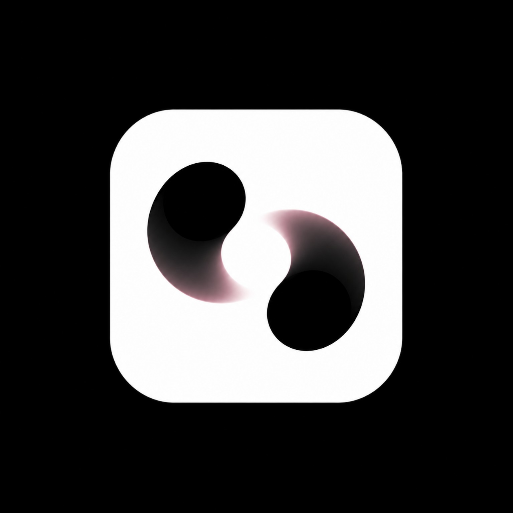

Simple by design.
Reduce unnecessary steps and make complex capabilities approachable.

Luno.Follow the journey ↗We believe intelligent tools should create clarity, not another layer of complexity.
↓ EXPLORE OUR THINKINGTHE QUESTION
Today, getting work done can mean jumping between apps, repeating instructions, and manually connecting small steps. More software hasn't always meant less work.
Luno begins with a different question: what would it look like if an assistant could help people move from intention to a useful result, while leaving meaningful decisions in human hands?
Reduce unnecessary steps and make complex capabilities approachable.
Automation should respect permissions, review points, and human judgment.
Start with real tasks, test outcomes, and improve what actually helps.